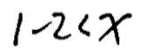
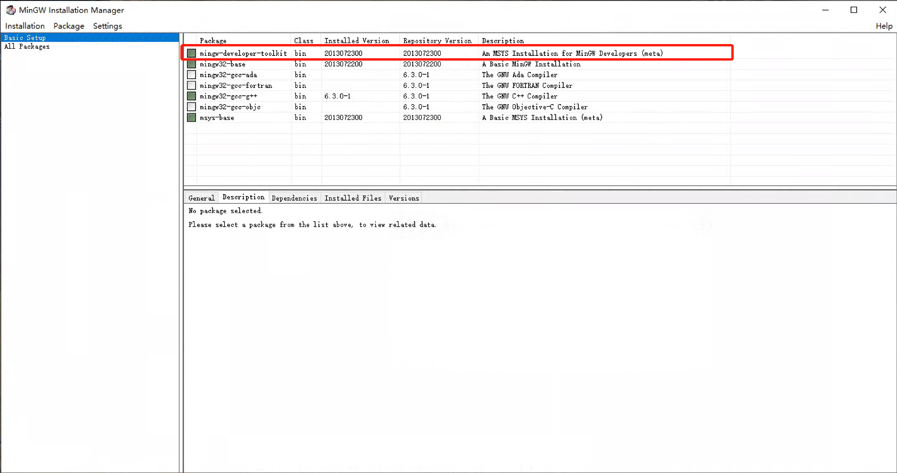
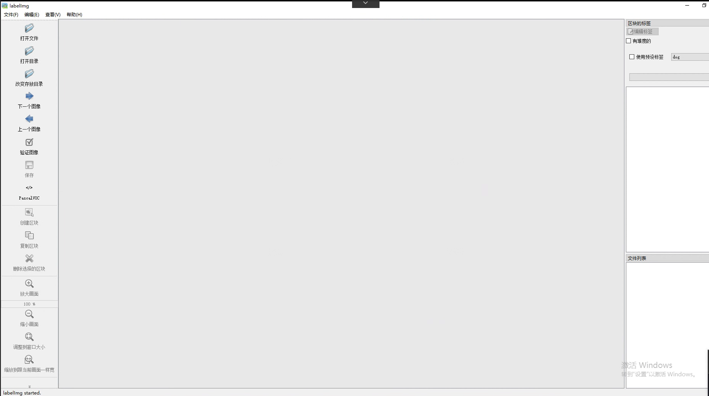
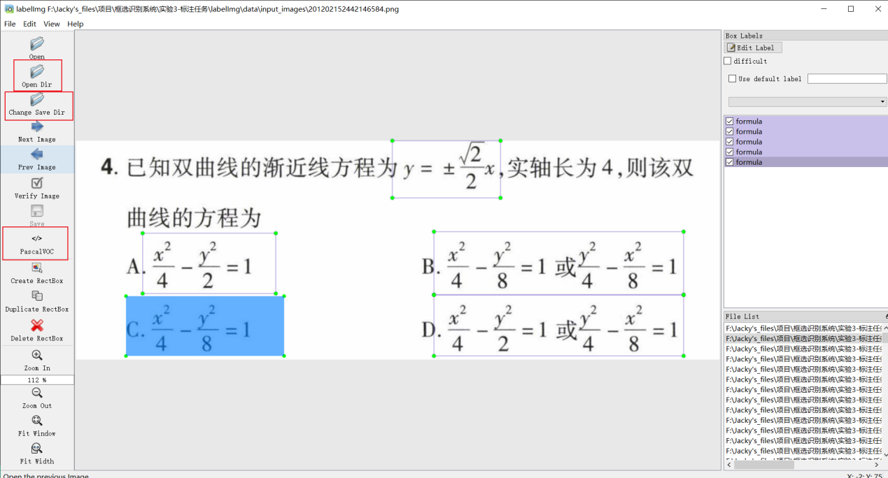
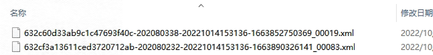

手写公式识别项目
一. 项目概述
1.1 项目简介
实践是检验学习成果的重要环节。在之前的作业当中，同学们已经熟悉了深度学习的基本原理和Pytorch/TensorFlow框架的使用方法，但是之前的作业距离实际的开发或科研仍然相差甚远。
为了检验同学们的学习成果，期末的大作业将是以小组的形式开展（建议每组4~5人），目标是从数据标注开始，训练一个手写公式识别模型。
其中，步骤一是每位同学都需要完成的，后续的步骤请进行合理的分工。
最终的考核形式以答辩为主，并且需要每位同学提交实验报告和源代码。
实验代码等数据以组为单位上交，实验报告单独撰写，单独上交，注明分工内容。
1.2 问题定义
需要把图片格式的数学表达式转化为文字格式的LaTex表达式
如上图所示是将印刷体格式的数学表达式进行识别和转化，而我们这次项目聚焦的是手写体的数学表达式。
手写体比印刷体的识别难度更加大，目前还是一个挑战。
如图，需要识别成 "1-2 < x"
1.3 评价指标
- EditDistance：即Levenshtein距离，以取反的百分数呈现，越大越好。例：80%的EditDistance代表需要改动20%的内容才能达到groundtruth
- ExactMatch：当预测结果和gt一样时才算100%准确，否则为0%，因此同样越大越好。
1.4 完成内容
- 熟悉并使用labelImg软件提取公式图片。本次实验会提供真实的初高中数学试卷作为数据源给每位同学，每位同学负责其中一部分图片的公式框选。（步骤一）
- 待每位同学完成后，将会收集同学们框选的标注，通过mathpix识别后，取mathpix的识别结果作为ground truth，再发回给大家作为数据集来训练。（步骤二）
- 利用所提供的代码，完成数据的清洗+预处理工作，以便作为模型的输入。（步骤三）
- 训练两个模型：（步骤四）
- Encoder用CNN，Decoder用RNN
- Encoder用Resnet，Decoder用Transformer
- 准备小组答辩，同时提交实验报告和源代码。（步骤五）
1.5 评分标准（项目总体分值为100分）
- 数据标注（40分）：高质量完成对应标注任务即可得到该部分分数的85%，额外标注一份即可得到得到该部分分数的100%。注：若标注质量低则酌情扣分。
- 模型实现（50分，结合答辩环节评估）：
- 模型正确性（30分）：CNN+RNN（15分）和 Resnet+Transformer（15分）。评分根据参考代码实现是否正确、实验结果评测指标、代码可复
现性和注释等方面来考虑。
- 模型拓展性（20分）：优化模型、优化数据预处理、讨论任务瓶颈等。有UI的根据UI的美观、实用性等方面酌情加分。
- 实验报告（10分）：材料完整性，命名规范性，书写美观性等等。
注：若发现代码，模型，结果，实验报告有抄袭或伪造情况，则扣除相应部分的分数！
二，步骤一：标注数据
2.1 使用软件介绍
本次标注使用的是labelImg，是目标检查与识别科研界内广泛使用的开源标注软件。项目地址为：https://github.com/tzutalin/labelImg。
2.2 软件安装流程
- 在windows系统下运行。首先下载仓库文件到本地，可以手动下载zip压缩包后解压或者在目标路径下打开git bash并输入以下命令
git clone https://github.com/heartexlabs/labelImg.git
- 进入labelImg文件夹，打开cmd终端依次运行
pip3 install pyqt5 lxml
make qt5py3
python3 labelImg.py
注：如果遇到报错“'make' 不是内部或外部命令，也不是可运行的程序或批处理文件。”，解决方法：（1）参考这里先安装MinGW；（2）参考这里打开MinGW管理界面安装toolkit等组件，最后在MinGW/bin路径下找到mingw32-make.exe并复制改名为make.exe。

顺利执行*labelImg.py*后将自动打开标注软件如下图：

2.3 标注流程
每位同学会分配50张的试卷图片，需要额外标注的同学联系助教拿额外50张试卷图片。
- 新建文件夹用于存放标注图片和对应的标签
在自定义的路径下新建input_images和labeled_images两个空文件夹。把所分配的数学试题图片放入input_images中。labeled_images文件夹用于存放后续软件生成的每张图片的xml标签。待标注完成后上交这两个文件夹
- 修改类别标签文件labelImg/data/predefined_classes.txt，删去原来类别名称，输入math，保存退出。
- 在labelImg下，使用命令
python3 labelImg.py打开标注软件（若在上一步中已经打开标注软件则跳过此步骤）
- 点击打开目录(Open Dir)，选择input_images文件夹
- 点击改变存放目录（Change Save Dir），选择labeled_images文件夹
- 点击Yolo/Pascal切换到PascalVOC模式。

- 点击创建区块（快捷键w），圈出图片中的数学表达式（框选规则见下一节），选择标签选择math，按“OK”键完成一个框的标注。当完成当前图片所有框选后，使用快捷键ctrl+S保存，当前图片的标注将自动保存到labeled_images文件夹下。之后点击下一张图片（下一张图片快捷键d，上一张图片快捷键a），重复以上过程直到完成预定数量的标注。
注：检查labeled_images文件下是否生成同名的xml标注文件

- 提升效率小技巧：（1）熟练使用快捷键w和d；（2）在软件右上角勾选使用预设标签
2.4 框选数学表达式规则：
框选图片中所有清晰的数学表达式，这里的数学表达式指的是带有上下标字母、字母加数字、公式或者其他任何能够转化为latex形式的数学表达式，
标注的原则如下：
- 认真框选每一个数学表达式，根据标注质量评判此部分的分数。
- 框选字迹清晰，水平方向书写，不受批注痕迹影响的数学表达式。
- 只有数字或简单字母的不框（比如5或a），但是组合的数学表达式比如5a可以框选。
- 难易相结合，长短相结合。
- 不同位置重复的表达式不框选。
- 题号等无关作答内容的数学表达式不框选。
- 跳过字迹不清晰的试卷。
以下是一些框选的示例：
三，步骤二：利用mathpix生成标注图片对应的公式
此步无需同学们完成。
四，步骤三：数据预处理（data_preprocess文件夹）
4.1 项目文件功能
.
├── data_filter.py # 过滤多行和内容为error mathpix的标签
├── data_preprocess_for_im2latex.py # 将数据整理成im2latex这个项目需要的格式
├── extract_image_according_to_label_list.py # 根据有效标签提取对应图片（一般来说有效标签数小于图片数，这一步是在预处理阶段将两个文件夹对齐，当然你也可以在模型的data_loader阶段对齐，总之以标签文件为锚点，不要出现根据图片去找标签这个情况，因为可能找不到。）
├── no_chinese.py # 这个文件非常重要，首先根据vocab（vocab关键词不完整，欢迎大家人工添加）进行分词，再过滤不在词表的标签文件
├── pad_image.py # 做图片padding的
├── shuffle_and_build_dataset.py # 针对LaTeX_OCR_PRO这个项目的格式预处理
├── vocab.txt
└── write_matching.py
4.2 预处理思路
- Tokenization，根据词表进行分词，并根据词表初步过滤数据
- 过滤多行数据和error mathpix
- 对齐过滤后的数据
- 根据项目输入输出格式对数据进行最后的调整
- 根据神经网络模型的需要，看是否需要padding，padding到什么size
五，步骤四：训练和测试评估模型
六，步骤五：准备答辩和提交材料
6.1 答辩
- 时间：XX月XX日
- 地点：XX
- 形式：待定
- 时长：待定
- 准备：PPT，实验报告，源代码等辅助材料
6.2 提交材料
- 截止时间：待定
- 提交格式：每位同学一个压缩包姓名.zip，结构如下
.
└── 姓名文件夹
├── 实验报告 # .docx/.doc/.pdf
├── 源代码 # 文件夹/.zip
└── 其他（可选，实验报告里面涉及的辅助材料） # 文件夹/.zip
- 提交形式：学委收齐，以QQ（备选邮箱）的方式发给助教
- 其他注意事项：不要交训练数据，实验报告里明确分工，不要只粘贴代码，有问题在群里或者私聊问助教或者线下问老师